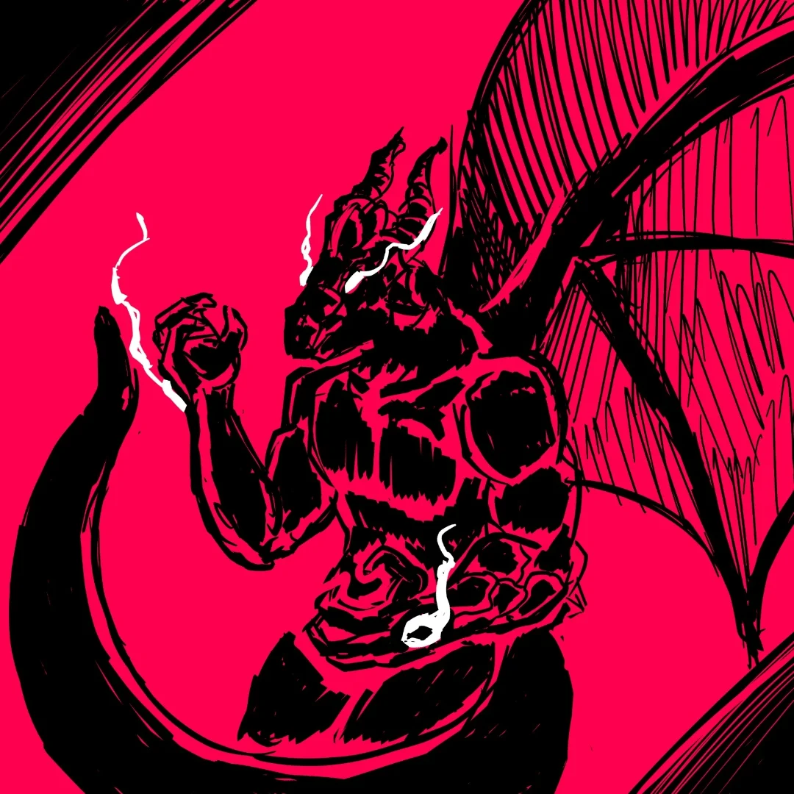

Ideal
Proteger os que não podem se defender.

Foi encontrado e acolhido por um quartel general. Ele passou por uma árdua e dura infância, sem crianças pra brincar, o mais perto de um brinquedo que ele tinha era uma espada.
Proteger os que não podem se defender.
Lealdade aos companheiros.
Teimoso: raramente recua, mesmo quando deveria.